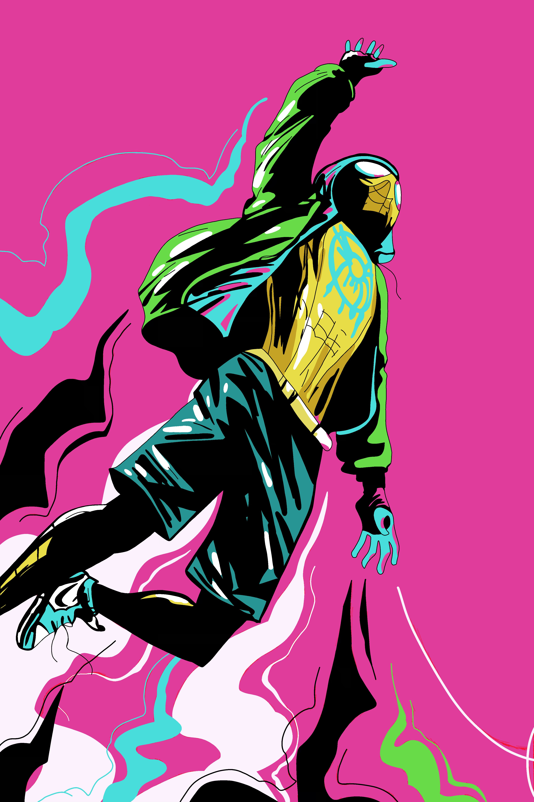

Artwork
In this section of the page i will be showcasing my artwork. this includes digital artowork, physical artwork and some Portrait photographs that I included in my art projects
Digital Artwork


The three images above are some of my comic and manga drawings, I use Pro-Create on my iPad to create these drawings. I love spending my time creating these pieces.
These images above are some of my Graffiti work, I've been drawing graffiti style pictures since I was a young child. I've always loved drawing Graffiti on paper and have now started using Pre-Create to create digital pieces that can be shared with ease.

These images above are some of my more detailed digital drawings. the right side image is yet to be complete however the sketch itself is more detailed then most of my other sketches and is one of my most difficult sketches.
Physical Artwork

These images are of some of my drawn artwork. I take pride in my Artwork. A lot of my drawings take a while to get right and some correcting so when things turn out the way these pieces have im very happy and proud of them. the image of the customised shoes was a project I did for Art college.
Photo Artwork
The three images above are some of the Photo Artwork I have drawn. I took Portrait photos of one of my friends and drew over the images digitally to create some different styled art pieces compared to my usual pieces. I also used these images as part of my A-level photography project